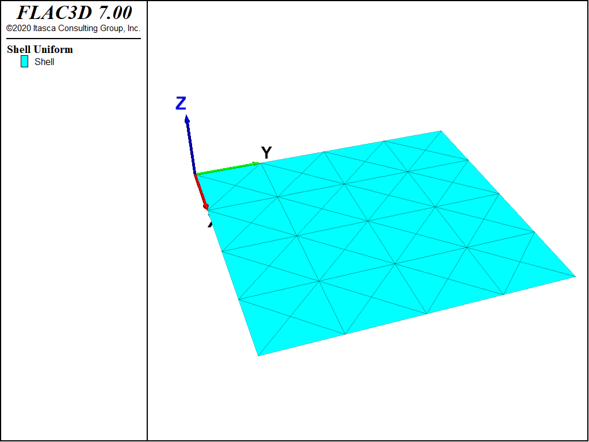
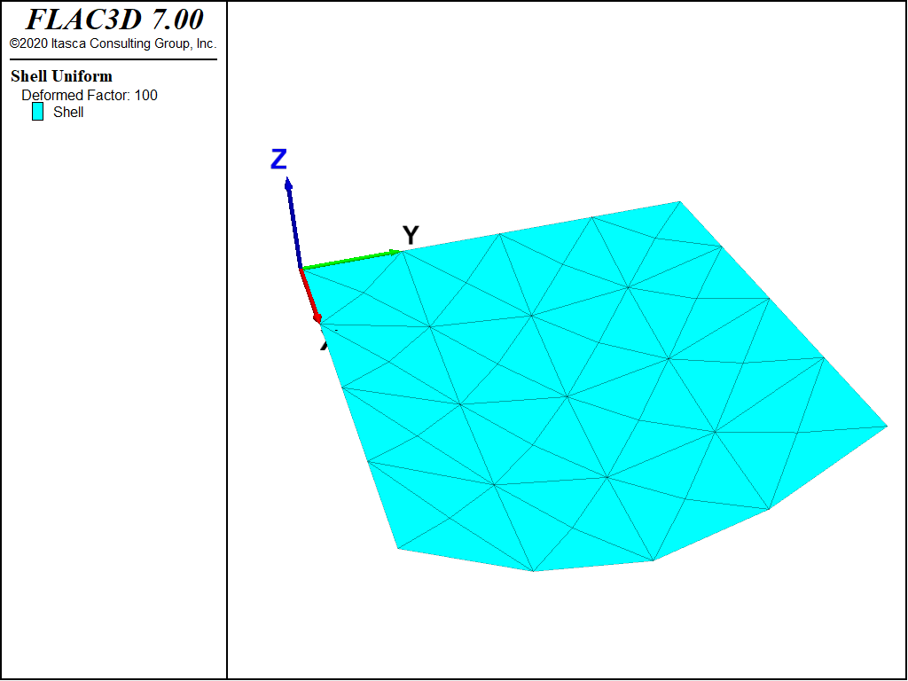
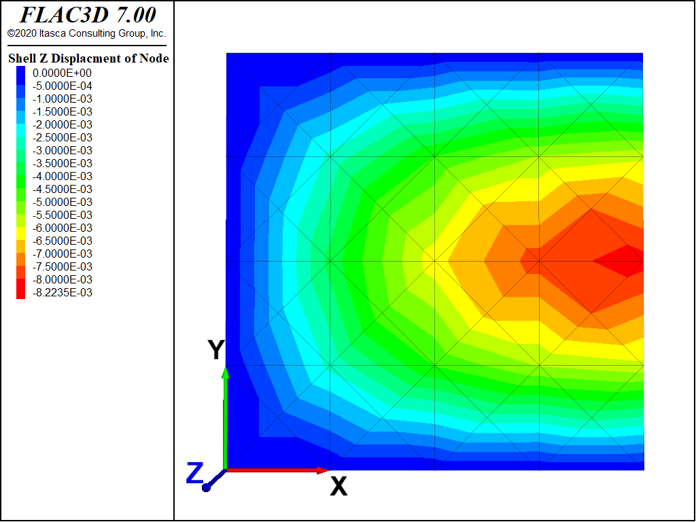
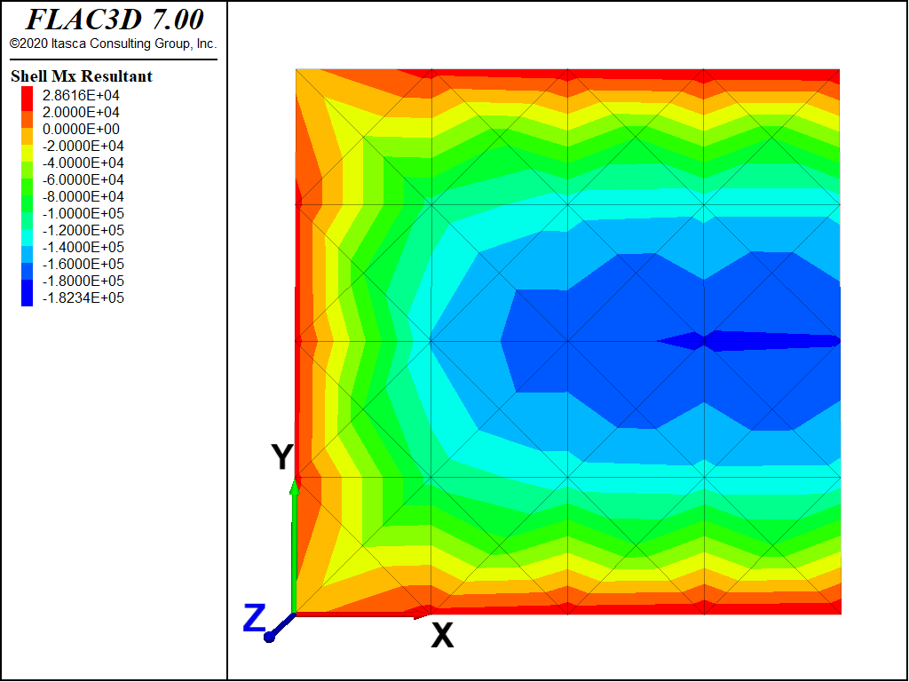
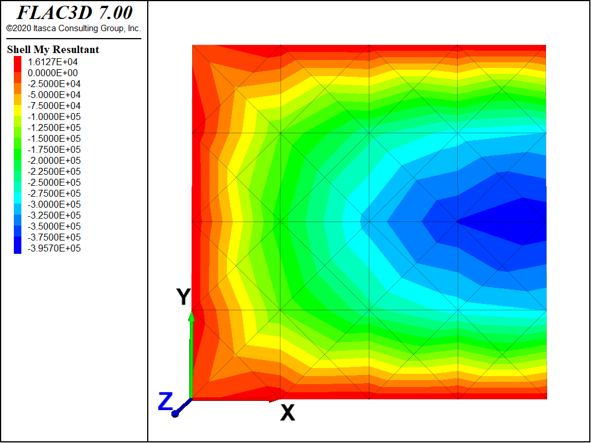

承受均布压力的各向同性矩形板
问题描述
注意
要在 FLAC3D 中查看该项目，请使用菜单命令 。选择 “Structure/Shell/PlateAppliedPressure” 并选中 “PlateAppliedPressure.f3prj” 载入。所用 主数据文件（main data files） 示于本例末尾。其余数据文件可在该项目中找到。
各向同性矩形板（4 m × 8 m）沿其各边简支。板在均布压力 \(p\) 作用下的弯曲与挠度解由 Ugural（1981，第 66-73 页）给出。最大挠度 \(w_{\rm max}\) 出现在板中心，等于
最大弯曲应力合力也出现在板中心，等于
| 其中： | \(a\) | = | short length of plate; |
| \(D\) | = | flexural rigidity = \({Et^3\over12(1-\nu^2)}\) (\(E\) is Young’s modulus=, \(\nu\) is Poisson’s ratio, and \(t\), is plate thickness); and | |
| \(\delta_1, \delta_2, \delta_3\) | = | 取自 Ugural（1981）表 3.1 的系数（\(\delta_1\) = 0.01013、\(\delta_2\) = 0.1017、\(\delta_3\) = 0.0464）。 |
指定以下壳性质：
| 厚度（\(t\)） | 0.3 m |
| 杨氏模量（\(E\)） | 30 GPa |
| 泊松比（\(\nu\)） | 0.30 |
对 240 kPa 的施加压力，板取向使 \(a\) = 4 m（与 \(y\) 轴对齐），板的长边与 \(x\) 轴对齐，则最大板挠度为 \(w_{\rm max}\) = 8.39 mm，最大弯曲应力合力为 \(M_x\) = 178 kN 与 \(M_y\) = 391 kN（其中表示 \(M_x\) 与 \(M_y\) 的表面坐标系与全局系对齐）。
FLAC3D 模型由 64 个壳单元构成，如 图 1（Figure 1） 所示。只建模板的一半；在长边一半处（\(x\) = 4）规定对称面。沿对称边的节点固定其 \(x\) 速度与 \(y\)、\(z\) 转动。其余三条边只固定 \(z\) 速度以模拟简支。（尽管经典板理论中简支的恰当边界条件还包括约束绕板平面内垂直于该边的轴的转动，但这种经典边界条件往往使网格过度约束并产生过刚的结果（Cook 1989，第 332 页）。）压力荷载用 structure shell apply 命令施加。采用交叉对角网格模式以确保响应对称，并采用 DKT 板弯曲单元（DKT Plate Bending Element）。若采用任一种壳有限单元也会得到相同结果，因为没有膜荷载。


图 1：矩形板问题的 FLAC3D 模型。
位移场示于 图 3（Figure 3） 与 图 2（Figure 2）。最大板挠度出现在板中心，等于 8.224 mm，与理论值相差 2% 以内。
弯曲应力合力 \(M_x\) 与 \(M_y\) 的等值线示于 图 4（Figure 4） 与 图 5（Figure 5）。在板中心计算的 \(M_x\) 与 \(M_y\) 的精确值分别为 182 kN 与 396 kN，二者与解析值相差均在 2.3% 以内。


图 2：矩形板的变形形状（放大 100 倍）。


图 3：板挠度等值线。


图 4：弯曲应力合力 \(M_x\) 等值线。


图 5：弯曲应力合力 \(M_y\) 等值线。
参考文献
Cook, R. D., D. S. Malkus and M. E. Plesha. Concepts and Applications of Finite Element Analysis, Third Edition. New York: John Wiley & Sons Inc. (1989).
Ugural, A. C. Stresses in Plates and Shells. New York: McGraw-Hill Publishing Company Inc. (1981).
数据文件
PlateAppliedPressure.dat
model new
model large-strain off
model title "Rectangular plate with applied pressure"
; 创建壳单元并设置参数
struct shell create by-quadrilateral (0,0,0) (4,0,0) (4,4,0) (0,4,0) ...
size (4,4) element-type=dkt cross-diagonal
struct shell property isotropic=(30e9, 0.3) thick=0.3
; 边界条件
struct node fix velocity-z range position-y 4 ; 简支条件
struct node fix velocity-z range position-x 0
struct node fix velocity-z range position-y 0
struct node fix velocity-x rotation-y rotation-z range position-x 4
; 对称条件
; 施加的压力
struct shell apply -240e3
; 求解
model solve ratio-local=1e-6
model save 'PlateAppliedPressure'
⇐ Plastic Hinge Formation in a Shell Structure | Advancing Lined Tunnel (Rigidly Connected to Zones) ⇒
| 这些内容对您有帮助吗？… | FLAC3D © 2019, Itasca | 原文更新于 2020 年 10 月 8 日 |